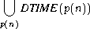
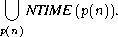
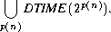
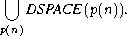
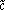
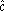
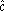

![[PICT]](draw-pic/theory-bk-five-5-1-1.jpg)
|
Random Access Machines
Time and Space on Turing Transducers
Complexity of Problems
Complexity Classes
Time and Space on Universal Turing Transducers
The time and space requirements of a given program depend on the program itself and on the agent executing it.
Each agent has its own sets of primitive data items and primitive operations. Each primitive data item of a given agent requires some fixed amount of memory space. Similarly, each primitive operation requires some fixed amount of execution time.
Moreover, each pair of agents that execute the same program are relatively primitive. That is, each primitive data item of one agent can be represented by some fixed number of primitive data items of the other agent. Similarly, each primitive operation of one agent can be simulated by some fixed number of primitive operations of the other agent.
When executing a given program, an agent represents the elements the program processes with its own primitive data items. Similarly, the agent simulates with its own primitive operations the instructions the program uses.
As a result, each computation of a given program requires some c1s space and some c2t time, where s and t depend only on the program and c1 and c2 depend only on the agent. c1 represents the packing power of the agent; c2 represents the speed of the agent and the simulation power of its operations.
Since different agents differ in their implied constants c1 and c2, and since the study of computation aims at the development of a general theory, then one can, with no loss of generality, restrict the study of time and space to behavioral analyses. That is, to analyses in which the required accuracy is only up to some linear factor from the time and memory requirements of the actual agents. Such analyses can be carried out by employing models of computing machines, such as the random access machines and Turing transducers used here.
In general, programs are written for execution on computers. Consequently, abstractions of computers are of central interest when considering the resources that programs require. A conventional computer can be viewed as having an input tape, an output tape, a fixed program, and a memory (see Figure 5.1.1).
|
The input and output tapes are one-way sequential tapes used for holding the input values and the output values, respectively. The memory consists of cells that can be accessed in any order. Each cell can hold values from a domain that has a binary representation. The number of cells can be assumed to be unbounded, because of the availability of giant memories for computers. Similarly, because of the large variety of values that can be stored in each cell, the size of each cell can be assumed to be unbounded. The fixed program can consist of any "standard" kind of deterministic instructions (e.g., read, write, add, subtract, goto).
Such abstract computers are called random access machines, or simply RAM's. In what follows, RAM's will be identified with deterministic programs of similar characteristics. In particular, the programs will be assumed to have domains of variables that are equal to the set of natural numbers, and variables that can be viewed as one-dimensional arrays. Each entry A(l) of an array A will be assumed to be accessed through an indexing operator whose parameters are A and l.
Example 5.1.1 The RAM in Figure 5.1.2
The RAM reads into K the cardinality N of the set to be sorted, and into A(1), ¼ , A(N)
the N elements to be sorted. Then the RAM sorts the set incrementally, starting with the
trivially sorted subset that consists only of the element in A(1). At each stage the element
in the next entry A(l) of A is added to the sorted subset and placed in its appropriate
position. 
In the case of RAM's there are two common kinds of cost criteria for the space and time analyses: the logarithmic and the uniform cost criteria.
Under the logarithmic cost criterion the following assumptions are made. The
primitive data items are the bits in the binary representations of the natural numbers being
used. The primitive operations are the bit operations needed for executing the instructions
of the RAM's. The memory needed in a computation of a given RAM is equal to that
required by the entries of the variables. The memory required by a given entry of a
variable, in turn, is equal to the length of the binary representation of the largest value v
being stored in it, that is, to élog (v + 1)ù if v 0 and to 1 if v = 0. The time needed by
the computation is equal to the number of bit operations needed for executing the
instructions.
0 and to 1 if v = 0. The time needed by
the computation is equal to the number of bit operations needed for executing the
instructions.
The uniform cost criterion is a degeneration of the logarithmic cost criterion in which the following assumptions are made. Each value is a primitive data item, the memory required by a given variable is equal to the number of entries in the array that it represents, the memory required by a RAM is equal to the total memory required by its variables, and the time required by a RAM is equal to the number of instructions being executed.
Example 5.1.2
Consider the RAM of Example 5.1.1 (see Figure 5.1.2). On input N, v1, ¼ , vN the
RAM requires 1 unit of space for K , one unit for i, one for j, and N units for
A , under the uniform cost criterion. On the other hand, under the logarithmic
cost criterion, the RAM requires élog Nù units of space for K, élog Nù units for
i, élog Nù for j, and Nmax(élog v1ù, ¼, élog vN ù) units of space for A. (In this
example élog aù is assumed to equal élog (a + 1)ù if a 0 and to equal 1 if
a = 0.)
0 and to equal 1 if
a = 0.)
The read K instruction takes one unit of time under the uniform cost criterion, and élog Nù units under the logarithmic cost criterion.
If i holds the value l then the instruction read A(i) takes 2 units of time under the uniform cost criterion: one unit for accessing the value l of i, and one unit for accessing the value of A(l). Under the logarithmic cost criterion the instruction requires élog lù + élog vlù units of time. Similarly, in such a case the instruction write A(i) takes 2 units of time under the uniform cost criterion, and élog lù + élog (the lth smallest value in {v1, ¼, vN })ù units under the logarithmic cost criterion.
The code segments for i := 1 up to K do read A(i) and for i := 1 up to K do write A(i) take time that is linear in N under the uniform cost criterion, and that is linear in (1 + log v1) + (log 2 + log v2) + · · · + (log N + log vN ) £ Nlog N + log (v1 · · · vN ) under the logarithmic cost criterion.
The RAM requires space that is linear in N under the uniform cost criterion,
and linear in Nlog m under the logarithmic cost criterion. m denotes the largest
value in the input. The RAM requires time that is linear in N2 under the uniform
cost criterion, and linear in N2log m under the logarithmic cost criterion.
In general, both the time and the space required for finding a solution to a problem at a given instance increase with the length of the representation of the instance. Consequently, the time and space requirements of computing machines are specified by functions of the length of the inputs.
In what follows, n will be used for denoting the length of the instances in question.
Example 5.1.3 A natural number greater than 1 and divisible only by 1 and itself, is called a prime number. The primality problem asks for any given positive integer number m whether it is prime. The RAM in Figure 5.1.3,
|
An input m can be given to the RAM in a unary or binary representation, whereas the
variables can hold their values only in binary. A unary representation for m has length
n = m, and a binary representation for m has length n = élog (m + 1)ù if m 0 and
length n = 1 if m = 0.
0 and
length n = 1 if m = 0.
With a unary representation for a given instance m of the problem, under the uniform
cost criterion, the RAM requires a constant space, and time linear in n. On the other
hand, under the logarithmic cost criterion, the RAM requires space linear in log n
and time linear in n(log n)k for some k > 0. A linear time in n is required for
reading the input m and storing it in binary (see Exercise 5.1.2), and a polynomial
time in log n is required for checking the divisibility of m by an integer i, where
2 £ i £  .
.
With a binary representation for a given instance m of the problem, the RAM requires
a constant space under the uniform cost criterion, and space linear in n under the
logarithmic cost criterion. But the algorithm requires time polynomial in m, or in 2n, under
both the uniform and logarithmic cost criteria.
Time and Space on Turing Transducers
In the case of Turing transducers we assume the following. The transition rules are the primitive operations, and the characters of the alphabets are the primitive data items. Each move takes one unit of time, and the time a computation takes is equal to the number of moves made during the computation. The space that a computation requires is equal to the number of locations visited in the auxiliary work tape, which has the maximal such number. (A possible alternative for the space measurement could be the sum of the number of locations visited over all the auxiliary work tapes. However, since the number of auxiliary work tapes is fixed for a given Turing transducer, and since constant factors are ignored in the analyses performed here, we use the traditional definition.)
A Turing transducer M is said to be a T(n) time-bounded Turing transducer, or of time complexity T(n), if all the possible computations of M on each input x of length n take no more than T(n) time. M is said to be polynomially time-bounded, or of polynomial time complexity, if T(n) is a polynomial in n. The Turing transducer M is said to be an S(n) space-bounded Turing transducer, or of space complexity S(n), if all the possible computations of M on each input x of length n take no more than S(n) space. M is said to be polynomially space-bounded, or of polynomial space complexity, if S(n) is a polynomial in n. M is said to be logspace-bounded , or of logspace complexity, if S(n) = c log n for some constant c. Similar definitions also hold for Turing machines, RAM's, and other classes of computing machines.
The following statement adds a refinement to Church's thesis. As in the case of the original thesis, the refinement cannot be proved to be correct. However, here too one can intuitively be convinced of the correctness of the statement, by showing the existence of translations between the different classes of models of computation under which the result is invariant. The translations between RAM's and deterministic Turing transducers can be similar to those exhibited in Section 4.2.
The Sequential Computation Thesis A function is computable (or, respectively, partially computable) by an algorithm A only if it is computable (or, respectively, partially computable) by a deterministic Turing transducer that satisfies the following conditions: A on a given input has a computation that takes T(n) time and S(n) space only if on such an input the Turing transducer has a computation that takes p(T(n)) time and p(S(n)) space, where p() is some fixed polynomial not dependent on the input.
With no loss of generality, in what follows it is assumed that a time-bound T(n) is equal to max(n, éT(n)ù), that is, is equal to at least the time needed to read all the input. In addition, a space-bound S(n) is assumed to equal max(1, éS(n)ù). log 0 is assumed to equal l. f(n) is assumed to equal éf(n)ù for all the other functions f(n).
The big O notation f(n) = O(g(n)) will be used for specifying that there exist a constant c > 0 and n0 such that f(n) £ cg(n) for all n ³ n0. In such a case, f(n) will be said to be of order g(n).
A problem will be said to be of time complexity T(n) if it is solvable by a T(n) time-bounded, deterministic Turing transducer. The problem will be said to be of nondeterministic time complexity T(n) if it is solvable by a T(n) time-bounded Turing transducer. The problem will be said to be of space complexity S(n) if it is solvable by an S(n) space-bounded, deterministic Turing transducer. The problem will be said to be of nondeterministic space complexity S(n) if it is solvable by an S(n) space-bounded Turing transducer.
Similarly, a language will be said to be of time complexity T(n) if it is accepted by a T(n) time-bounded, deterministic Turing machine. The language will be said to be of nondeterministic time complexity T(n) if it is accepted by a T(n) time-bounded, nondeterministic Turing machine. The language will be said to be of space complexity S(n) if it is accepted by an S(n) space-bounded, deterministic Turing machine. The language will be said to be of nondeterministic space complexity S(n) if it is accepted by an S(n) space-bounded, nondeterministic Turing machine.
The following classes are important to our study of time and space.
the class of languages that have nondeterministic time complexity O(T(n)).
the class of languages that have deterministic space complexity O(S(n)).
the class of languages that have nondeterministic space complexity O(S(n)).

(p(n) stands for a polynomial in n.)



Example 5.1.4 The primality problem can be solved by a deterministic Turing transducer in polynomial time if the instances are given in unary representations, and in exponential time if the instances are given in nonunary representations (see Example 5.1.3). However, for a given instance m both approaches require time that is polynomial in m.
When considering the complexity of the primality problem, a nonunary representation for the instances is considered natural and a unary representation for the instances is considered unnatural. The specific choice of the cardinality d of a nonunary representation is of no importance, because the lengths of such different representations of a number m are equal up to a constant factor. Specifically, a length logd1m and a length logd2m, for a pair of representations of m, satisfy the relation logd1m = (logd1d2)logd2m when d1 and d2 are greater than 1.
Consequently, the RAM in Figure 5.1.3 and the sequential computation thesis imply
that the primality problem is of exponential time complexity.
Time and Space on Universal Turing Transducers
An analysis of the proof of Theorem 4.4.1 provides the following lemma.
Lemma 5.1.1 The universal Turing transducer U of Theorem 4.4.1 on a given input (M, x), of a deterministic Turing transducer M and an input x for M,
Proof Assume the notations in the proof of Theorem 4.4.1. The number of moves that U needs to check for proper input (M, x) is at most some constant times |x|, where the constant depends only on the length of the representation of M.
Specifically, U needs |E(M)| + 3 moves for finding E(M). |E(M)| moves for scanning E(M), and 3 moves for determining the 01 that follows the suffix 01 of E(M).
Checking for a proper representation E(M) of a Turing transducer M takes a number of moves, which is linear in |E(M)|, that is,
Checking for a proper input x for the Turing transducer M requires time that is linear in |E(M)|(|E(M)| + |x|). Specifically, U in time that is linear in |E(M)|2 determines the input symbols of M and stores them in an auxiliary work tape. Then U in |E(M)| · |x| time checks that only symbols from the auxiliary work tape are in x.
U requires log |x| + |E(M)|(ms + 1) + 2m + 3 £ s locations in the auxiliary work tapes for recording the strings #E(q)#|u|#E(u1)#E(v1)# · · · #E(um)# E(vm)# which represent the configurations (uqv, u1qv1, ¼, umqvm, w) of M, where = 8|E(M)|m. U requires log |x| locations for |u|, |E(M)| locations for q, |E(M)| locations for each symbol in each ui, |E(M)| locations for each symbol in each vi, and 2m + 3 locations for the symbols #.
Given a string #E(q)#|u|#E(u1)#E(v1)# · · · #E(um)#E(vm)#, the universal
Turing transducer U can determine in at most  (s + |x|) £ t moves the first m + 2
elements q, a, b1, ¼ , bm of the transition rule t = (q, a, b1, ¼, bm, p, d0, c1, d1, ¼, cm, dm, r)
to be used in the next simulated move of M, where is some constant whose
magnitude is linear in |E(M)| and bi denotes the first symbol in viB. The
transducer takes at most
(s + |x|) £ t moves the first m + 2
elements q, a, b1, ¼ , bm of the transition rule t = (q, a, b1, ¼, bm, p, d0, c1, d1, ¼, cm, dm, r)
to be used in the next simulated move of M, where is some constant whose
magnitude is linear in |E(M)| and bi denotes the first symbol in viB. The
transducer takes at most  s moves for extracting |u|, E(q), E(b1), ¼ , E(bm) from
#E(q)#|u|#E(u1)#E(v1)# · · · #E(um)#E(vm)#. In particular, 6|u| moves are
needed over the string representing |u| for counting down from |u| to 0 (see
Exercise 5.1.2), and |E(M)| + |01| + |E(u)| moves are needed for extracting the symbol a
from the input tape.
s moves for extracting |u|, E(q), E(b1), ¼ , E(bm) from
#E(q)#|u|#E(u1)#E(v1)# · · · #E(um)#E(vm)#. In particular, 6|u| moves are
needed over the string representing |u| for counting down from |u| to 0 (see
Exercise 5.1.2), and |E(M)| + |01| + |E(u)| moves are needed for extracting the symbol a
from the input tape.
Given the first m + 2 elements (q, a, b1, ¼, bm) in t, the universal Turing transducer U can determine the tuple (p, d0, c1, d1, ¼, cm, dm, r) in a single sweep over the input tape. Having such a tuple, U can also modify the recorded configuration of M in a single sweep.
Consequently, the total number of moves that U needs for simulating the moves of M
is no greater than ct2. c is some polynomial (independent of M) in the length of the
standard binary representation of M.